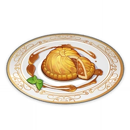

Universal Peace
by Eula

Description
Moonpie by the character you will be most indebt in. This food look rich because the family
who made it is also insanely rich.
Ingridients
- 4 Raw Meat
- 4 Bird Egg
- 3 Butter
- 2 Flour
Steps
- Mix Butter, Bird Egg, and Flour until your arm gets tired. All of it!
- Cook the meat, maybe frying it? dunno
- Wrap the cooked meat in batter from the first step.
- Bake it! Eyoo